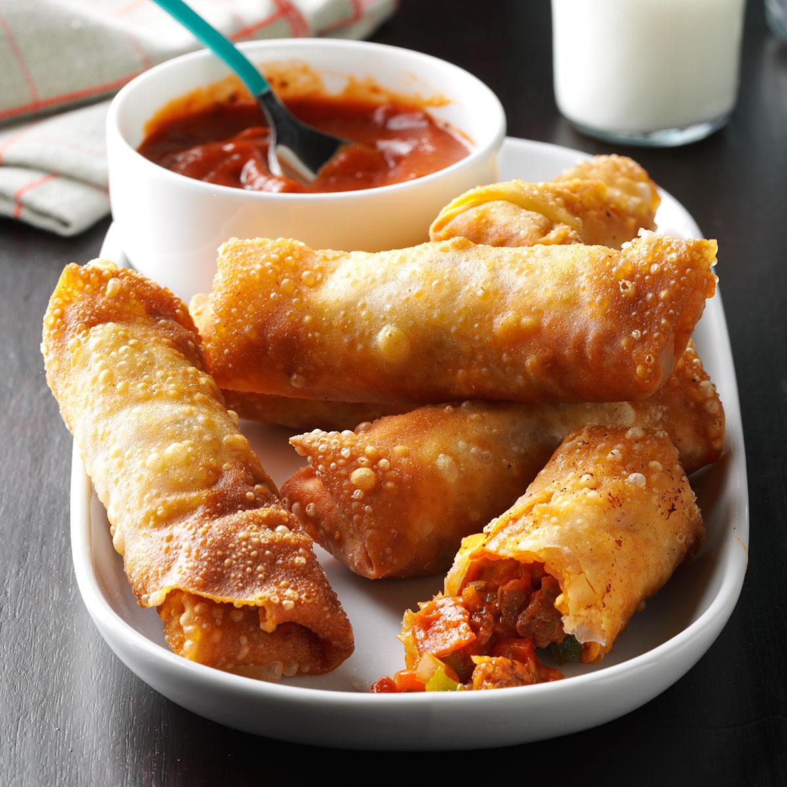

Pizza Roll
Total Time:
Prep:50 min. Cook:5 min./batch

" Our family just loves my husband's version of store-bought pizza rolls. They take some time to make,
but they freeze well so we get to enjoy the fruits of our labor for a long time!" —Meg Hommer, Normal, Illinois
Ingredients
- 4 cups shredded pizza cheese blend or part-skim mozzarella cheese
- 1 pound bulk Italian sausage, cooked and drained
- 2 packages (3 ounces each) sliced pepperoni, chopped
- 1 medium green pepper, finely chopped
- 1 medium sweet red pepper, finely chopped
- 1 medium onion, finely chopped
- 2 jars (14 ounces each) pizza sauce
- 32 egg roll wrappers
- Oil for frying
- Additional pizza sauce for dipping, warmed, optional
Steps
- In a large bowl, combine the cheese, sausage, pepperoni, peppers and onion. Stir in pizza sauce until combined. Place about 1/4 cup filling in the center of each egg roll wrapper. Fold bottom corner over filling; fold sides toward center over filling. Moisten remaining corner with water and roll up tightly to seal.
- In a Dutch oven or deep cast-iron skillet, heat 1-2 in. of oil to 375°. Fry pizza rolls until golden brown, 1-2 minutes on each side. Drain on paper towels. If desired, serve with additional pizza sauce.
Nutrition Facts
1 roll: 297 calories, 19g fat (5g saturated fat),
28mg cholesterol, 537mg sodium, 22g carbohydrate
(2g sugars, 1g fiber), 9g protein.